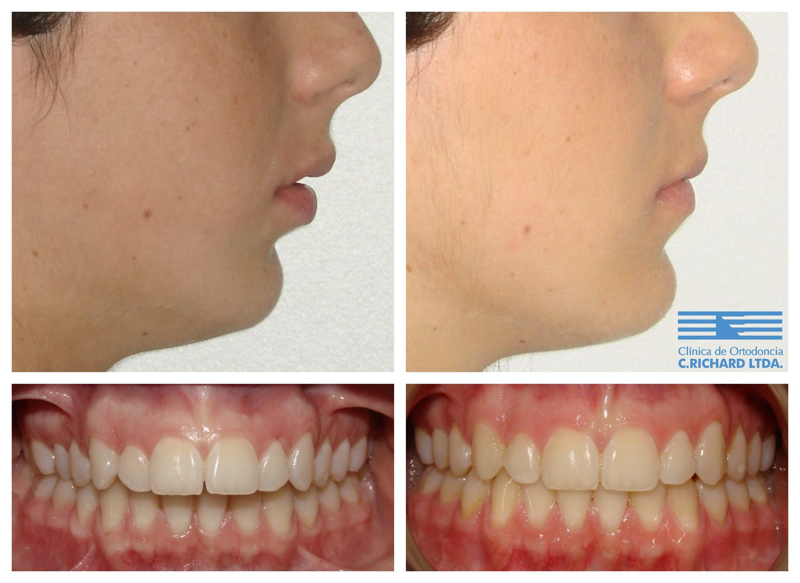

Ortodoncia y cirugía ortognática: cuándo se necesitan las dos
Revisado por Dr. Alberto Del Real V., ortodoncista · Registro Superintendencia de Salud N° 312378 · Actualizado en octubre de 2026
Cuando los maxilares están muy desalineados —la mandíbula muy adelante o muy atrás, una mordida abierta marcada o una asimetría facial—, los aparatos por sí solos no logran una mordida correcta en un adulto. Entonces se combina la ortodoncia con una cirugía de los maxilares (cirugía ortognática), que realiza un cirujano maxilofacial. El ortodoncista prepara los dientes antes de la cirugía y termina de ajustarlos después, en un plan coordinado entre ambos.

Cuándo se indica
En adultos que ya terminaron de crecer, con diferencias de tamaño o posición entre los maxilares que afectan la mordida, la masticación, la respiración o la armonía del rostro. En niños y adolescentes, en cambio, muchas veces se puede guiar el crecimiento con ortopedia y evitar la cirugía; por eso importa evaluar a tiempo.
Cómo es el tratamiento
- Ortodoncia prequirúrgica: se alinean y ordenan los dientes en cada maxilar.
- Cirugía: el cirujano maxilofacial reposiciona los maxilares.
- Ortodoncia posquirúrgica: se termina de ajustar la mordida.
En casos seleccionados se usa el enfoque Cirugía Primero: los aparatos se instalan justo antes de la cirugía, lo que acorta el tratamiento total y entrega el cambio facial desde el inicio.
Beneficios
- Mordida y masticación correctas.
- Mejor armonía facial.
- Resultados más estables en el tiempo que forzar solo con dientes una diferencia de los huesos.
Para entender cómo evoluciona la relación entre los maxilares después de la pubertad, nuestro equipo publicó:
Quién te atiende
Ortodoncistas especialistas, miembros de la AAO, la WFO y la Sociedad de Ortodoncia de Chile:
Preguntas frecuentes
¿Toda mandíbula adelantada necesita cirugía?
No. En niños y adolescentes muchas veces se puede tratar con ortopedia. En adultos depende de la magnitud de la diferencia; se define con radiografías y un estudio completo.
¿Quién hace la cirugía ortognática?
Un cirujano maxilofacial. El ortodoncista planifica junto a él y prepara y termina la mordida.
¿Qué es Cirugía Primero?
Un enfoque en que la cirugía se hace al comienzo del tratamiento, con los aparatos instalados justo antes, lo que puede acortar la duración total.